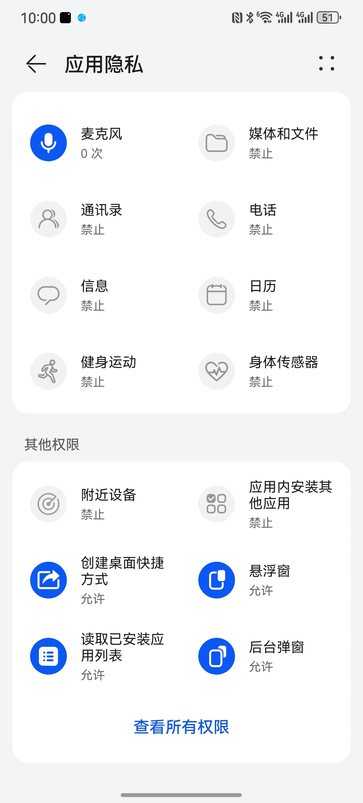
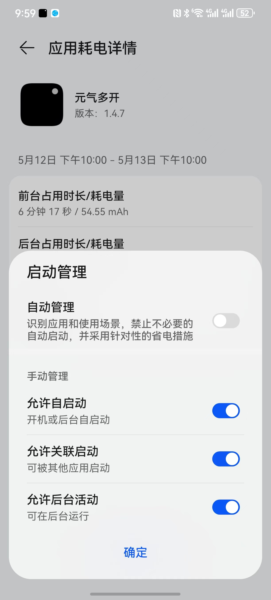
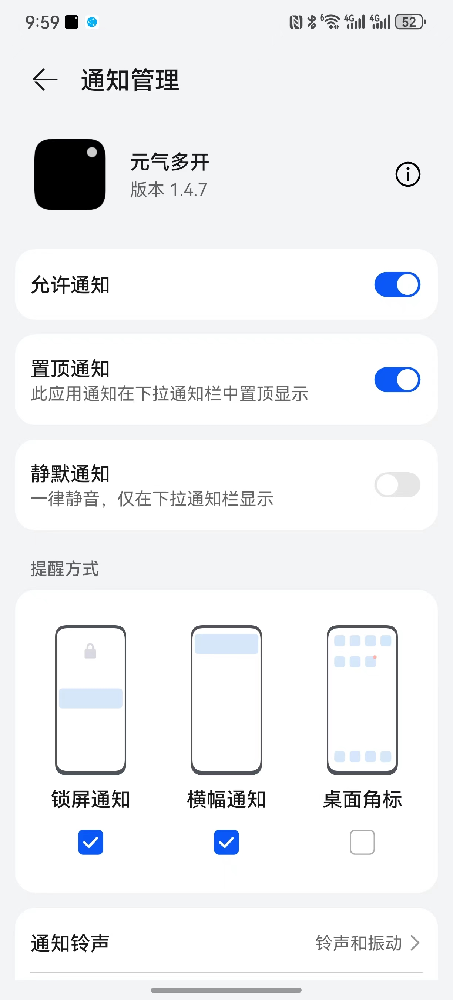
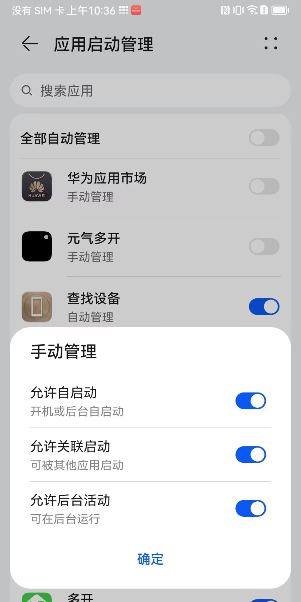

-
分身应用账号安全风险:
正常使用，不进行违规操作一般不会被封号，是否会被封号主要与个人使用习惯有关，如频繁加好友、未实名、未绑定银行卡等都有影响；
为了降低封号风险，不建议用户使用新注册的账号登录分身。
-
创建桌面快捷方式：
长按分身应用图标，点击下方创建快捷方式按钮，根据提示在系统设置内授予“元气多开”桌面快捷方式权限，授予完成后返回APP重新点击创建快捷方式，选择已设置即可，如果您在未授予权限情况下选择“已设置”按钮，需要您自行在系统设置内授予“元气多开”桌面快捷方式权限；
-
设置分身应用后台保活：
①、打开【开发者选项】
以华为手机为例，打开【系统设置 ->关于手机)，点击【HarmonyOS版本】7次，即可打开【开发者选项】。如果打不开可自行百度搜索当前手机型号的打开方式。
②、启用【停止限制子进程】
返回系统设置 页，打开【系统和更新】，在【开发人员选项】的分组里，找到【停止限制子进程】开关并启用。如果你无法找到这个开关，请尝试其他解锁方式。
如果无法进入下一步骤，请尝试关闭【停止限制子进程】然后再次打开。
-
分身应用新消息通知：
强调：为了保证元气多开和分身应用可以收到消息，请进行设置！！！设置后99%可以确保消息的正常收发。请设置元气多开和你想要接收到消息的应用！！！具体设置请参考华为鸿蒙系统；




-
分身应用调用支付：
如使用分身应用需要调用微信、支付宝支付时，需要您添加分身微信或分身支付宝等，微信1对应分身应用1、微信2对应分身应用2，以此类推；
-
分身应用卡顿、白屏等问题：
出现以上问题您可以关闭分身应用，点击右上方设置菜单，点击清除缓存后重新打开分身应用解决，如仍未解决可添加官方客服协助处理；
-
分身应用更新：
若您已添加的分身应用有更新，需要您在外部更新原生应用后再次启动APP打开分身应用即可正常使用，更新前的分身应用数据默认保留；
-
分身应用图标未显示：
如果您在添加分身APP后，因部分机型加载分身应用进度慢，可能存在返回主页面未显示分身应用图标的情况，您可以尝试后台关闭“元气多开”后重新打开即可正常显示；
-
添加应用：
点击右上方“＋”按钮添加分身应用。您可以添加手机已安装的应用和从SDK卡安装APK文件；
-
长按分身图标：
长按分身应用图标。弹出更多功能。您可以对分身应用单独进行设置（一键换机、应用锁、设置备注、创建桌面快捷方式）、快捷添加分身、删除等；
-
32位兼容包下载：
若您需要使用32位兼容包，请至我们的官网www.yqdk.com下载，下载安装完成后自动覆盖安装，原64位应用内的数据不会丢失；
若您在使用过程中有任何问题，可以在APP内“关于我们”页面，添加官方QQ、微信联系我们。